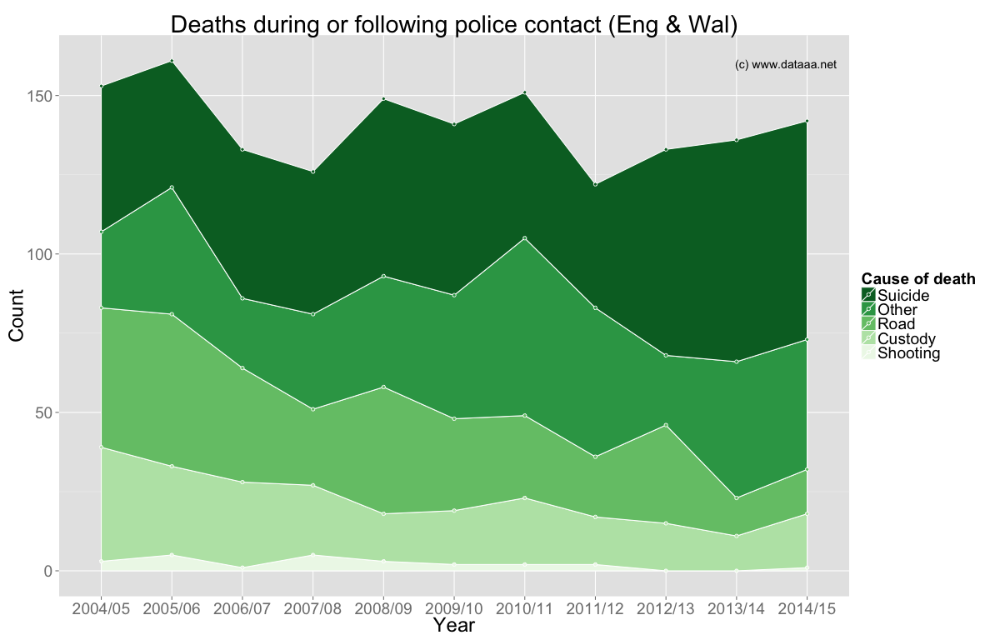
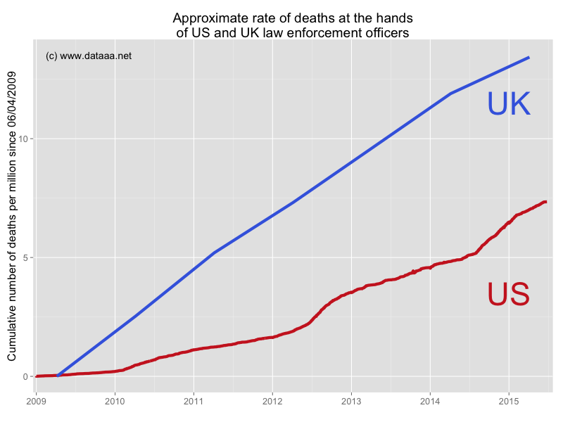
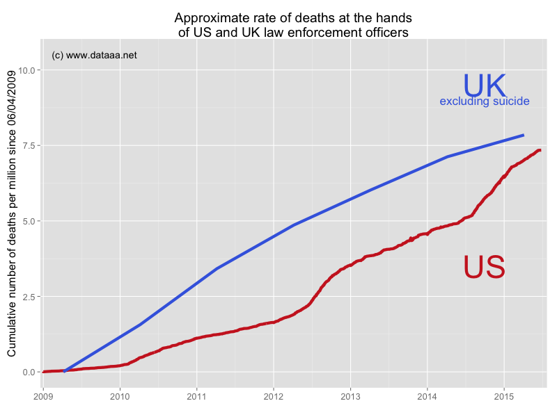

Police deaths in the UK (updated)
If you've been following this blog at all, you'll know that I've been watching with interest the series of police-related deaths in the USA. The rate of these deaths (to be precise, the rate of reported deaths: this may be increasing as awareness increases) seems to be increasing dramatically. Two more high-profile cases hit the news this week: the reported suicides of activists Sandra Bland and Rexdale Henry whilst in police custody.
Last week the Independent Police Complaints Commission in the UK released its figures for deaths during or following police contact for the year. These data give, amongst other things, deaths related to police vehicle pursuits, police shootings, deaths in custody, and suicides within 2 days of release from police custody for police forces in England and Wales. There were 142 deaths in 2014/2015, including one shooting. In the plot below I have summarised the last 10 years' worth of data. It is good to see that the number of deaths per year is holding steady at around the 140 mark, if not decreasing slightly. These figures are independently assembled, and thoroughly investigated, and therefore should be accurate.

Whilst many categories show a decreasing rate of deaths (Road Traffic Incidents, Shootings, Custody Incidents), suicides have been increasing at a rate of approx. 2 per year, which goes to show the increasing pressure the police force is under to deal with and understand mental health issues.
How does the England & Wales rate (which I will erroneously call the 'UK' rate from now on) differ from the death rate in the US? It is hard to find figures for the US that are as stringent as those from the IPCC, and so as a surrogate I will use the reported deaths from the log on Wikipedia. Note (well) that these are reported deaths, often from media sources, they are not official police figures. However, a recent study in Florida found that local media reported four times as many police deaths as local police did. It would be senseless to compare death totals in the 'UK' and the US without scaling for population (there is a factor ~5 difference), so I have plotted deaths per million since 2009, below:

The difference is marked: almost twice as many police-related deaths per million in the UK as in the US, since 2009. It is clear that the data collected from Wikipedia is not as rigorous as the IPCC data, and therefore we might expect the Wikipedia data to provide a lower limit to US death counts. From browsing the Wikipedia list entries, it is also clear that they focus on directly-caused deaths, and often deaths from violence (shootings, beatings), whereas the IPCC data include, for instance, suicides that have occurred outside of police custody, which may however have been significantly influenced by contact with the police. If we exclude the 'suicide' category from the IPCC data, the two counts become more comparable:

Without more complete data from the US it is hard to say whether there is a significant difference here, but it is at least interesting and surprising to see that the 'UK' rate is so high in comparison to that in the US.